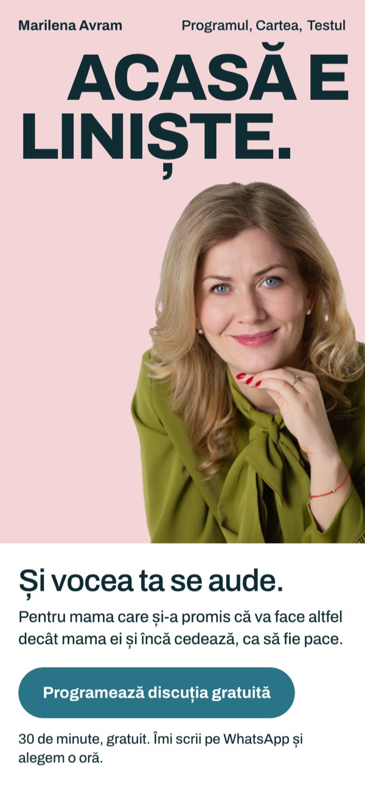
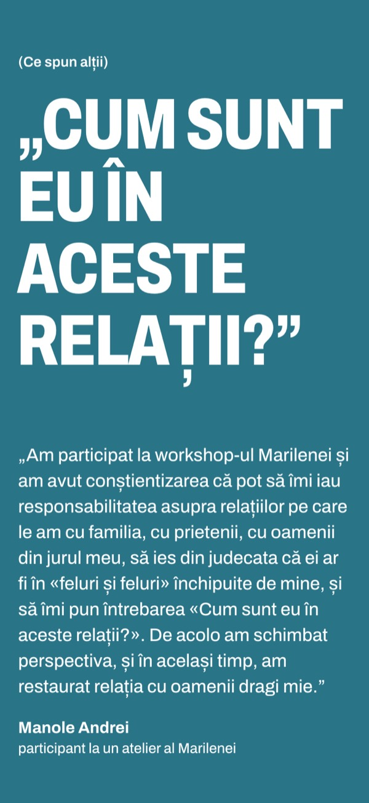
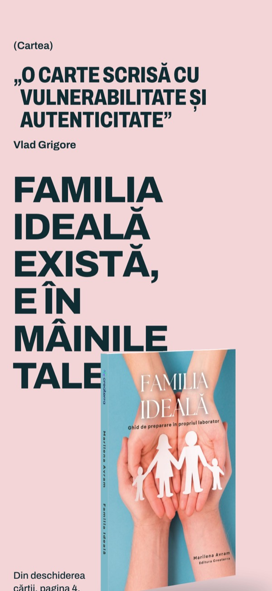
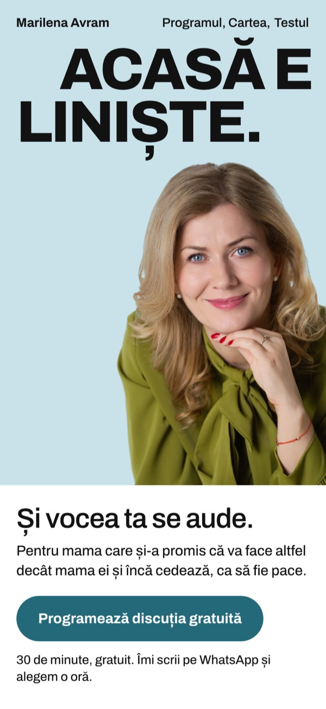
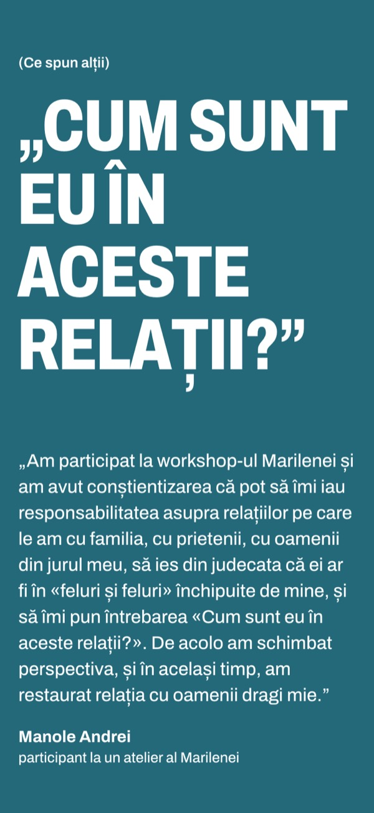
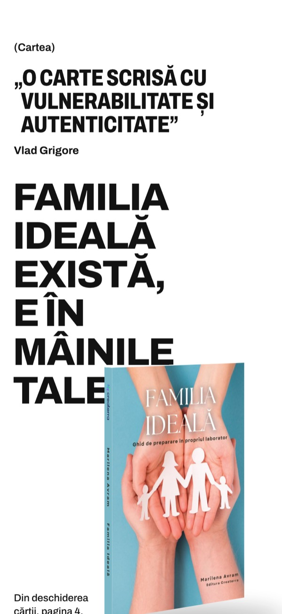
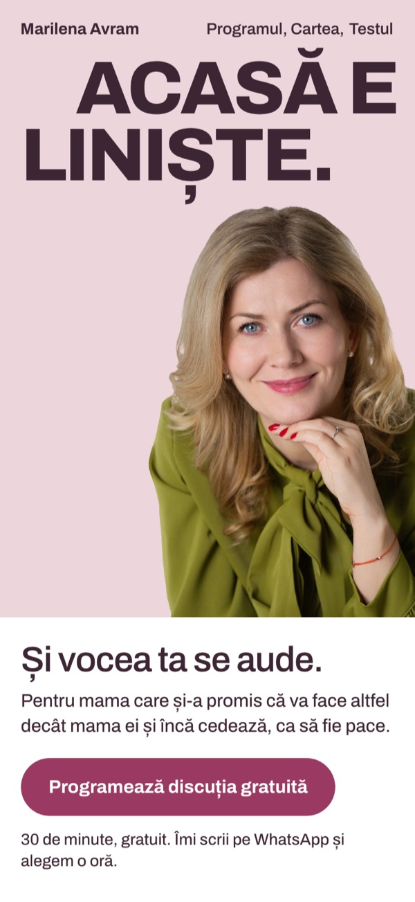
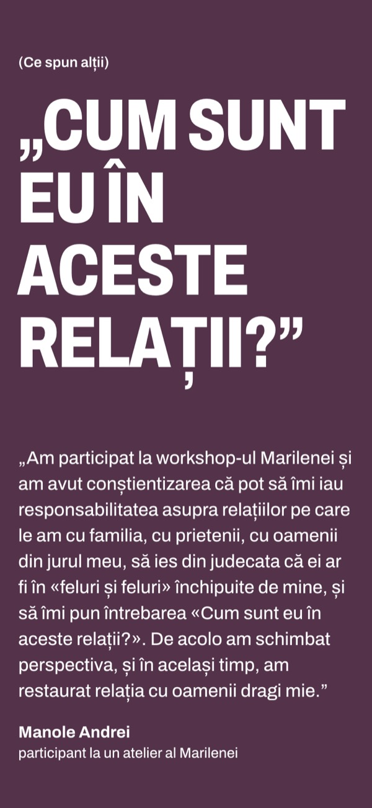
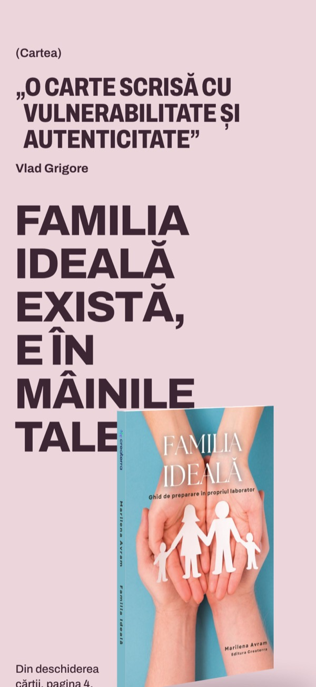

(Pentru Marilena)
Același site, mai scurt, în trei variante de culoare. Textul e identic, diferă doar culorile.
Rozul de pe Oracolul Familiilor, cu turcoazul cărții. Aceeași pereche ca pe copertă.



Glisează pentru mai multe ecrane.
Deschide varianta rozAlbastrul pudrat de pe coperta Oracolului, cu turcoazul cărții. Albastrul e culoarea de bază din strategia ta.



Glisează pentru mai multe ecrane.
Deschide varianta bleuPrună caldă, din bluza de pe portretul tău, cu un roz pudrat.



Glisează pentru mai multe ecrane.
Deschide varianta prună